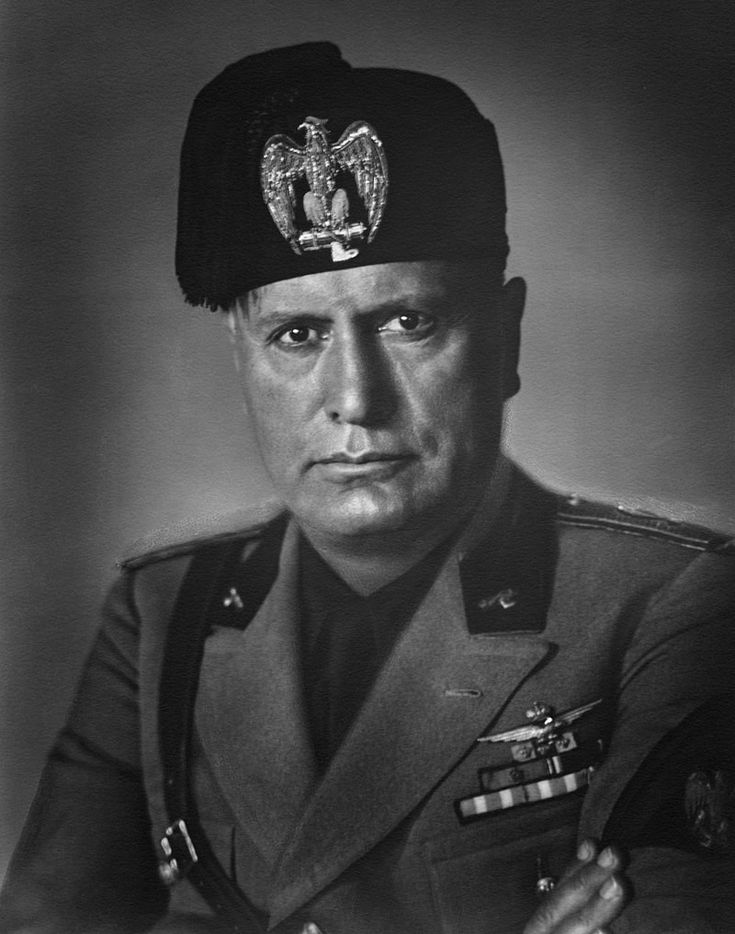

SumberBENITO MUSSOLINI adalah pemimpin fasis Italia (1922–1943) yang mendirikan kediktatoran fasis pertama di dunia. Ia bersekutu dengan Adolf Hitler dalam Perang Dunia II tetapi akhirnya digulingkan dan dieksekusi.
Nama Lengkap: Benito Amilcare Andrea Mussolini Lahir: 29 Juli 1883, Predappio, Italia Meninggal: 28 April 1945, Giulino di Mezzegra, Italia Jabatan: Perdana Menteri Italia (1922–1943) Pemimpin Fasis Italia (Il Duce) Partai: Partai Fasis Nasional (PNF)
Berasal dari keluarga kelas pekerja; ayahnya adalah seorang sosialis. Awalnya seorang jurnalis dan anggota Partai Sosialis Italia, tetapi diusir karena mendukung Perang Dunia I. 1919: Membentuk kelompok paramiliter "Blackshirts", yang menyerang kaum komunis dan lawan politik. 1921: Mendirikan Partai Fasis Nasional (PNF) dan memperoleh dukungan dari pengusaha dan militer.
1. Kudeta "March on Rome" (1922) 27–29 Oktober 1922: Mussolini dan pasukannya berbaris ke Roma, menekan Raja Vittorio Emanuele III untuk menyerahkan kekuasaan. 31 Oktober 1922: Mussolini menjadi Perdana Menteri Italia. 2. Mendirikan Kediktatoran Fasis (1925–1943) 1925: Menghapus demokrasi, menekan oposisi, dan menjadikan dirinya sebagai "Il Duce" (Sang Pemimpin). Mengontrol media dan propaganda untuk menanamkan ideologi fasis. Mempromosikan imperialisme dan memperluas wilayah Italia, termasuk ke Ethiopia (1935). 3. Perang Dunia II dan Kejatuhan (1939–1945) 1936: Bersekutu dengan Hitler dalam Paksi Poros (Axis Powers). 1940: Italia masuk Perang Dunia II di pihak Jerman, tetapi mengalami kekalahan besar. 1943: Mussolini digulingkan dan ditangkap, tetapi diselamatkan oleh Nazi. 1943–1945: Memimpin Republik Sosial Italia (boneka Jerman) di Italia Utara. 1945: Ditangkap oleh gerilyawan Italia dan dieksekusi.
28 April 1945: Ditangkap oleh partisan Italia saat melarikan diri ke Swiss. Ditembak mati di Giulino di Mezzegra bersama kekasihnya, Clara Petacci. Jenazahnya digantung terbalik di Milan sebagai simbol kehancuran fasisme.
N ✅ Dampak Positif: Meningkatkan infrastruktur dan industri Italia. Meningkatkan nasionalisme dan stabilitas politik di awal pemerintahannya. ❌ Dampak Negatif: Menghapus demokrasi dan menekan kebebasan berpendapat. Memimpin Italia dalam Perang Dunia II, yang berujung pada kehancuran negara. Bertanggung jawab atas perang di Afrika dan kebrutalan terhadap warga sipil. Mussolini dikenang sebagai simbol kediktatoran fasis pertama, yang kemudian menginspirasi Hitler dan pemimpin otoriter lainnya.